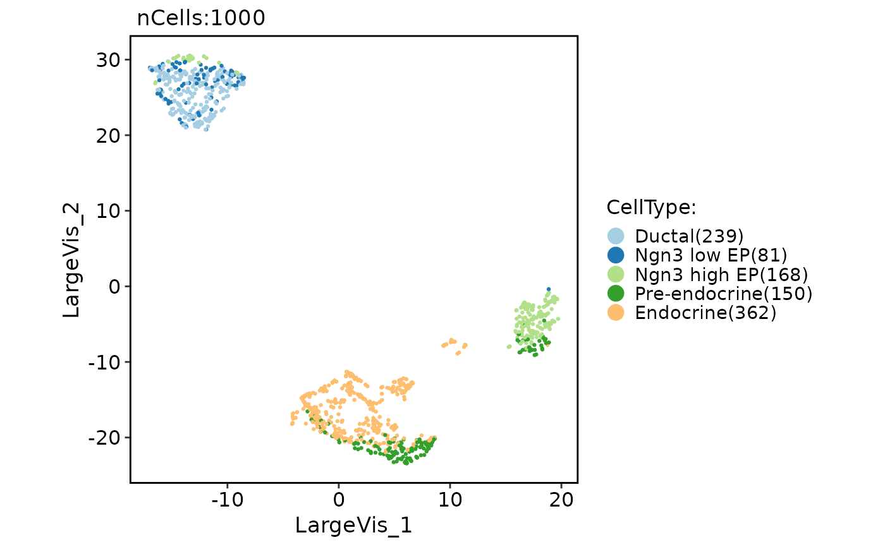

Run LargeVis (Dimensionality Reduction with a LargeVis-like method)
Source:R/Seurat-function.R
RunLargeVis.RdRun LargeVis (Dimensionality Reduction with a LargeVis-like method)
Usage
RunLargeVis(object, ...)
# S3 method for class 'Seurat'
RunLargeVis(
object,
reduction = "pca",
dims = NULL,
features = NULL,
assay = NULL,
layer = "data",
perplexity = 50,
n_neighbors = perplexity * 3,
n_components = 2,
metric = "euclidean",
n_epochs = -1,
learning_rate = 1,
scale = "maxabs",
init = "lvrandom",
init_sdev = NULL,
repulsion_strength = 7,
negative_sample_rate = 5,
nn_method = NULL,
n_trees = 50,
search_k = 2 * n_neighbors * n_trees,
n_threads = NULL,
n_sgd_threads = 0,
grain_size = 1,
kernel = "gauss",
pca = NULL,
pca_center = TRUE,
pcg_rand = TRUE,
fast_sgd = FALSE,
batch = FALSE,
opt_args = NULL,
epoch_callback = NULL,
pca_method = NULL,
reduction.name = "largevis",
reduction.key = "LargeVis_",
verbose = TRUE,
seed.use = 11L,
...
)
# Default S3 method
RunLargeVis(
object,
assay = NULL,
perplexity = 50,
n_neighbors = perplexity * 3,
n_components = 2,
metric = "euclidean",
n_epochs = -1,
learning_rate = 1,
scale = "maxabs",
init = "lvrandom",
init_sdev = NULL,
repulsion_strength = 7,
negative_sample_rate = 5,
nn_method = NULL,
n_trees = 50,
search_k = 2 * n_neighbors * n_trees,
n_threads = NULL,
n_sgd_threads = 0,
grain_size = 1,
kernel = "gauss",
pca = NULL,
pca_center = TRUE,
pcg_rand = TRUE,
fast_sgd = FALSE,
batch = FALSE,
opt_args = NULL,
epoch_callback = NULL,
pca_method = NULL,
reduction.key = "LargeVis_",
verbose = TRUE,
seed.use = 11L,
...
)Arguments
- object
An object. This can be a Seurat object or a matrix-like object.
- ...
Additional arguments to be passed to the lvish function.
- reduction
A character string specifying the reduction to be used. Default is "pca".
- dims
An integer vector specifying the dimensions to be used. Default is NULL.
- features
A character vector specifying the features to be used. Default is NULL.
- assay
A character string specifying the assay to be used. Default is NULL.
- layer
A character string specifying the layer name to be used. Default is "data".
- perplexity
Controls the size of the local neighborhood used for manifold approximation. This is the analogous to
n_neighborsinumap. Change this, rather thann_neighbors.- n_neighbors
The number of neighbors to use when calculating the
perplexity. Usually set to three times the value of theperplexity. Must be at least as large asperplexity.- n_components
An integer specifying the number of LargeVis components. Default is 2.
- metric
Type of distance metric to use to find nearest neighbors. For
nn_method = "annoy"this can be one of:"euclidean"(the default)"cosine""manhattan""hamming""correlation"(a distance based on the Pearson correlation)"categorical"(see below)
For
nn_method = "hnsw"this can be one of:"euclidean""cosine""correlation"
If rnndescent is installed and
nn_method = "nndescent"is specified then many more metrics are avaiable, including:"braycurtis""canberra""chebyshev""dice""hamming""hellinger""jaccard""jensenshannon""kulsinski""rogerstanimoto""russellrao""sokalmichener""sokalsneath""spearmanr""symmetrickl""tsss""yule"
For more details see the package documentation of
rnndescent. Fornn_method = "fnn", the distance metric is always "euclidean".If
Xis a data frame or matrix, then multiple metrics can be specified, by passing a list to this argument, where the name of each item in the list is one of the metric names above. The value of each list item should be a vector giving the names or integer ids of the columns to be included in a calculation, e.g.metric = list(euclidean = 1:4, manhattan = 5:10).Each metric calculation results in a separate fuzzy simplicial set, which are intersected together to produce the final set. Metric names can be repeated. Because non-numeric columns are removed from the data frame, it is safer to use column names than integer ids.
Factor columns can also be used by specifying the metric name
"categorical". Factor columns are treated different from numeric columns and although multiple factor columns can be specified in a vector, each factor column specified is processed individually. If you specify a non-factor column, it will be coerced to a factor.For a given data block, you may override the
pcaandpca_centerarguments for that block, by providing a list with one unnamed item containing the column names or ids, and then any of thepcaorpca_centeroverrides as named items, e.g.metric = list(euclidean = 1:4, manhattan = list(5:10, pca_center = FALSE)). This exists to allow mixed binary and real-valued data to be included and to have PCA applied to both, but with centering applied only to the real-valued data (it is typical not to apply centering to binary data before PCA is applied).- n_epochs
Number of epochs to use during the optimization of the embedded coordinates. The default is calculate the number of epochs dynamically based on dataset size, to give the same number of edge samples as the LargeVis defaults. This is usually substantially larger than the UMAP defaults. If
n_epochs = 0, then coordinates determined by"init"will be returned.- learning_rate
Initial learning rate used in optimization of the coordinates.
- scale
Scaling to apply to
Xif it is a data frame or matrix:"none"orFALSEorNULLNo scaling."Z"or"scale"orTRUEScale each column to zero mean and variance 1."maxabs"Center each column to mean 0, then divide each element by the maximum absolute value over the entire matrix."range"Range scale the entire matrix, so the smallest element is 0 and the largest is 1."colrange"Scale each column in the range (0,1).
For lvish, the default is
"maxabs", for consistency with LargeVis.- init
Type of initialization for the coordinates. Options are:
"spectral"Spectral embedding using the normalized Laplacian of the fuzzy 1-skeleton, with Gaussian noise added."normlaplacian". Spectral embedding using the normalized Laplacian of the fuzzy 1-skeleton, without noise."random". Coordinates assigned using a uniform random distribution between -10 and 10."lvrandom". Coordinates assigned using a Gaussian distribution with standard deviation 1e-4, as used in LargeVis (Tang et al., 2016) and t-SNE."laplacian". Spectral embedding using the Laplacian Eigenmap (Belkin and Niyogi, 2002)."pca". The first two principal components from PCA ofXifXis a data frame, and from a 2-dimensional classical MDS ifXis of class"dist"."spca". Like"pca", but each dimension is then scaled so the standard deviation is 1e-4, to give a distribution similar to that used in t-SNE and LargeVis. This is an alias forinit = "pca", init_sdev = 1e-4."agspectral"An "approximate global" modification of"spectral"which all edges in the graph to a value of 1, and then sets a random number of edges (negative_sample_rateedges per vertex) to 0.1, to approximate the effect of non-local affinities.A matrix of initial coordinates.
For spectral initializations, (
"spectral","normlaplacian","laplacian","agspectral"), if more than one connected component is identified, no spectral initialization is attempted. Instead a PCA-based initialization is attempted. Ifverbose = TRUEthe number of connected components are logged to the console. The existence of multiple connected components implies that a global view of the data cannot be attained with this initialization. Increasing the value ofn_neighborsmay help.- init_sdev
If non-
NULL, scales each dimension of the initialized coordinates (including any user-supplied matrix) to this standard deviation. By default no scaling is carried out, except wheninit = "spca", in which case the value is0.0001. Scaling the input may help if the unscaled versions result in initial coordinates with large inter-point distances or outliers. This usually results in small gradients during optimization and very little progress being made to the layout. Shrinking the initial embedding by rescaling can help under these circumstances. Scaling the result ofinit = "pca"is usually recommended andinit = "spca"as an alias forinit = "pca", init_sdev = 1e-4but for the spectral initializations the scaled versions usually aren't necessary unless you are using a large value ofn_neighbors(e.g.n_neighbors = 150or higher). For compatibility with recent versions of the Python UMAP package, if you are usinginit = "spectral", then you should also setinit_sdev = "range", which will range scale each of the columns containing the initial data between 0-10. This is not set by default to maintain backwards compatibility with previous versions of uwot.- repulsion_strength
Weighting applied to negative samples in low dimensional embedding optimization. Values higher than one will result in greater weight being given to negative samples.
- negative_sample_rate
The number of negative edge/1-simplex samples to use per positive edge/1-simplex sample in optimizing the low dimensional embedding.
- nn_method
Method for finding nearest neighbors. Options are:
"fnn". Use exact nearest neighbors via the FNN package."annoy"Use approximate nearest neighbors via the RcppAnnoy package."hnsw"Use approximate nearest neighbors with the Hierarchical Navigable Small World (HNSW) method (Malkov and Yashunin, 2018) via the RcppHNSW package.RcppHNSWis not a dependency of this package: this option is only available if you have installedRcppHNSWyourself. Also, HNSW only supports the following arguments formetric:"euclidean","cosine"and"correlation"."nndescent"Use approximate nearest neighbors with the Nearest Neighbor Descent method (Dong et al., 2011) via the rnndescent package.rnndescentis not a dependency of this package: this option is only available if you have installedrnndescentyourself.
By default, if
Xhas less than 4,096 vertices, the exact nearest neighbors are found. Otherwise, approximate nearest neighbors are used. You may also pass precalculated nearest neighbor data to this argument. It must be a list consisting of two elements:"idx". An_vertices x n_neighborsmatrix containing the integer indexes of the nearest neighbors inX. Each vertex is considered to be its own nearest neighbor, i.e.idx[, 1] == 1:n_vertices."dist". An_vertices x n_neighborsmatrix containing the distances of the nearest neighbors.
Multiple nearest neighbor data (e.g. from two different precomputed metrics) can be passed by passing a list containing the nearest neighbor data lists as items. The
n_neighborsparameter is ignored when using precomputed nearest neighbor data.- n_trees
Number of trees to build when constructing the nearest neighbor index. The more trees specified, the larger the index, but the better the results. With
search_k, determines the accuracy of the Annoy nearest neighbor search. Only used if thenn_methodis"annoy". Sensible values are between10to100.- search_k
Number of nodes to search during the neighbor retrieval. The larger k, the more the accurate results, but the longer the search takes. With
n_trees, determines the accuracy of the Annoy nearest neighbor search. Only used if thenn_methodis"annoy".- n_threads
Number of threads to use (except during stochastic gradient descent). Default is half the number of concurrent threads supported by the system. For nearest neighbor search, only applies if
nn_method = "annoy". Ifn_threads > 1, then the Annoy index will be temporarily written to disk in the location determined bytempfile.- n_sgd_threads
Number of threads to use during stochastic gradient descent. If set to > 1, then be aware that if
batch = FALSE, results will not be reproducible, even ifset.seedis called with a fixed seed before running. Set to"auto"to use the same value asn_threads.- grain_size
The minimum amount of work to do on each thread. If this value is set high enough, then less than
n_threadsorn_sgd_threadswill be used for processing, which might give a performance improvement if the overhead of thread management and context switching was outweighing the improvement due to concurrent processing. This should be left at default (1) and work will be spread evenly over all the threads specified.- kernel
Type of kernel function to create input probabilities. Can be one of
"gauss"(the default) or"knn"."gauss"uses the usual Gaussian weighted similarities."knn"assigns equal probabilities to every edge in the nearest neighbor graph, and zero otherwise, usingperplexitynearest neighbors. Then_neighborsparameter is ignored in this case.- pca
If set to a positive integer value, reduce data to this number of columns using PCA. Doesn't applied if the distance
metricis"hamming", or the dimensions of the data is larger than the number specified (i.e. number of rows and columns must be larger than the value of this parameter). If you have > 100 columns in a data frame or matrix, reducing the number of columns in this way may substantially increase the performance of the nearest neighbor search at the cost of a potential decrease in accuracy. In many t-SNE applications, a value of 50 is recommended, although there's no guarantee that this is appropriate for all settings.- pca_center
If
TRUE, center the columns ofXbefore carrying out PCA. For binary data, it's recommended to set this toFALSE.- pcg_rand
If
TRUE, use the PCG random number generator (O'Neill, 2014) during optimization. Otherwise, use the faster (but probably less statistically good) Tausworthe "taus88" generator. The default isTRUE. This parameter has been superseded byrng_type– if both are set,rng_typetakes precedence.- fast_sgd
If
TRUE, then the following combination of parameters is set:pcg_rand = TRUEandn_sgd_threads = "auto". The default isFALSE. Setting this toTRUEwill speed up the stochastic optimization phase, but give a potentially less accurate embedding, and which will not be exactly reproducible even with a fixed seed. For visualization,fast_sgd = TRUEwill give perfectly good results. For more generic dimensionality reduction, it's safer to leavefast_sgd = FALSE. Iffast_sgd = TRUE, then user-supplied values ofpcg_randandn_sgd_threads, are ignored.- batch
If
TRUE, then embedding coordinates are updated at the end of each epoch rather than during the epoch. In batch mode, results are reproducible with a fixed random seed even withn_sgd_threads > 1, at the cost of a slightly higher memory use. You may also have to modifylearning_rateand increasen_epochs, so whether this provides a speed increase over the single-threaded optimization is likely to be dataset and hardware-dependent.- opt_args
A list of optimizer parameters, used when
batch = TRUE. The default optimization method used is Adam (Kingma and Ba, 2014).methodThe optimization method to use. Either"adam"or"sgd"(stochastic gradient descent). Default:"adam".beta1(Adam only). The weighting parameter for the exponential moving average of the first moment estimator. Effectively the momentum parameter. Should be a floating point value between 0 and 1. Higher values can smooth oscillatory updates in poorly-conditioned situations and may allow for a largerlearning_rateto be specified, but too high can cause divergence. Default:0.5.beta2(Adam only). The weighting parameter for the exponential moving average of the uncentered second moment estimator. Should be a floating point value between 0 and 1. Controls the degree of adaptivity in the step-size. Higher values put more weight on previous time steps. Default:0.9.eps(Adam only). Intended to be a small value to prevent division by zero, but in practice can also affect convergence due to its interaction withbeta2. Higher values reduce the effect of the step-size adaptivity and bring the behavior closer to stochastic gradient descent with momentum. Typical values are between 1e-8 and 1e-3. Default:1e-7.alphaThe initial learning rate. Default: the value of thelearning_rateparameter.
- epoch_callback
A function which will be invoked at the end of every epoch. Its signature should be:
(epoch, n_epochs, coords), where:epochThe current epoch number (between1andn_epochs).n_epochsNumber of epochs to use during the optimization of the embedded coordinates.coordsThe embedded coordinates as of the end of the current epoch, as a matrix with dimensions (N,n_components).
- pca_method
Method to carry out any PCA dimensionality reduction when the pca parameter is specified. Allowed values are: "irlba", "rsvd", "bigstatsr", "svd", "auto"(the default. Uses "irlba", unless more than 50 case "svd" is used.)
- reduction.name
A character string specifying the name of the reduction to be stored in the Seurat object. Default is "largevis".
- reduction.key
A character string specifying the prefix for the column names of the LargeVis embeddings. Default is "LargeVis_".
- verbose
A logical value indicating whether to print verbose output. Default is TRUE.
- seed.use
An integer specifying the random seed to be used. Default is 11.
Examples
pancreas_sub <- Seurat::FindVariableFeatures(pancreas_sub)
pancreas_sub <- RunLargeVis(object = pancreas_sub, features = Seurat::VariableFeatures(pancreas_sub))
#> 20:03:14 Read 1000 rows and found 2000 numeric columns
#> 20:03:14 Normalizing by max-abs
#> 20:03:14 Using FNN for neighbor search, n_neighbors = 150
#> 20:03:15 Commencing calibration for perplexity = 50 using 2 threads
#> 20:03:17 Initializing from random Gaussian with sd = 1e-4
#> 20:03:17 Commencing optimization for 265696 epochs, with 217614 positive edges
#> 20:03:17 Using rng type: pcg
#> 20:05:51 Optimization finished
CellDimPlot(pancreas_sub, group.by = "CellType", reduction = "largevis")
#> Warning: No shared levels found between `names(values)` of the manual scale and the data's fill values.
